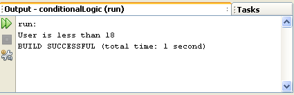
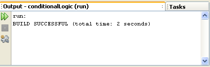
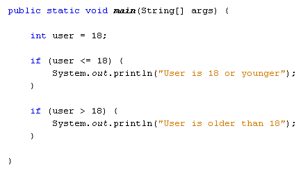
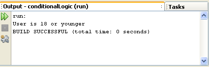
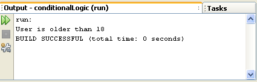

Conditional Logic - If Statements
The programming you're doing now is sequential programming, meaning the code is executed from top to bottom. It's very linear, in that each and every line of code will be read, starting with the first line of code you write and ending at the last line.
But you don't always want your programmes to work like that. Often, you want code to be executed only if certain conditions are met. For example, you might want one message to display if a user is below the age of 18 and a different message if he or she is 18 or older. You want to control the flow of the programme for yourself. You can do this with conditional logic.
Conditional logic is mainly about the IF word: IF user is less than 18 then display this message; IF user is 18 or older then display that message. Fortunately, it's very easy to use conditional logic in Java. Let's start with IF Statements.
IF Statements
Executing code when one thing happens rather than something else is so common in programming that that the IF Statement has been developed. The structure of the IF Statement in Java is this:
if ( Statement ) {
}
You start with the word IF (in lowercase) and a pair of round brackets. You then use a pair of curly brackets to section off a chunk of code. This chunk of code is code that you only want to execute IF your condition is met. The condition itself goes between round brackets:
if ( user < 18 ) {
}
This condition says "IF user is less than 18". But instead of saying "is less than" we use the shorthand notation of the left-pointing angle bracket ( < ). IF the user is less than 18 then we want something to happen, to display a message, for example:
if ( user < 18 ) {
//DISPLAY MESSAGE
}
If the user is not less than 18 then the code between the curly brackets will be skipped, and the programme continues on its way, downwards towards the last line of code. Whatever you type between the curly brackets will only be executed IF the condition is met, and this condition goes between the round brackets.
Before we try this out, another shorthand notation is this symbol >. The right-pointing angle bracket means "greater than". Our IF Statement above can be amended slightly to check for users who are greater than 18:
if ( user > 18 ) {
//DISPLAY MESSAGE
}
The only thing new in this code is the > symbol. The condition now checks for users who are greater than 18.
But the condition doesn't check for people who are exactly 18, just those greater than 18. If you want to check for those who are 18 or over, you can say "greater than or equal to". The symbols for this are the greater than sign ( > ) followed by an equals sign ( = ):
if ( user >= 18 ) {
//DISPLAY MESSAGE
}
You can also check for "less than or equal to" in a similar way:
if ( user <= 18 ) {
//DISPLAY MESSAGE
}
The above code contains a less than symbol ( < ) followed by the equals sign.
Let's try all this out in a simple programme.
Start a new project by clicking File > New Project from the menu bar in NetBeans. You can call your package and class names anything you like. Enter the following code (our package name is conditionallogic and the Class is called IFStatements):

We've set up an integer variable, and assigned a value of 17 to it. The IF statement checks for "less than 18". So the message between the curly brackets should be printed out.
Run your programme and check it out. (NetBeans has a habit of running the programme in bold text in the Projects window and not the code you have displayed. To run the code in your coding window, right click anywhere in the code. From the menu that appears select Run File.) You should see this in your Output window:

Now change the value for the user variable from 17 to 18. Run your programme again. You should see this:

So the programme runs OK, with no error messages. It's just that nothing gets printed out. The reason is that the message code is between the curly brackets of the IF Statement. And the IF Statement is checking for values less than 18. IF the condition is not met, Java ignores the curly brackets altogether and moves on.
Exercise
Replace your "less than" symbol with the "less than or equal
to" symbols. Change your message to suit, something like "user is
less than or equal to 18". Run your programme again. Do you see the message?
Exercise
Change the user value to 20. Run your programme again. Do you still see the
message?
You can have more than one IF Statement in your code. Try the following code:

This time, we have two IF Statements. The first tests for values less than or equal to 18. The second tests for values greater than 18. When the code is run with a value of 18 or less for the user variable, the Output is this:

Changing the value of the user variable to 20 gives this:

So only one of the IF Statements will Output a print line. And it all depends on what the value of the user variable is.
In the next part, we'll continue with Conditional Logic